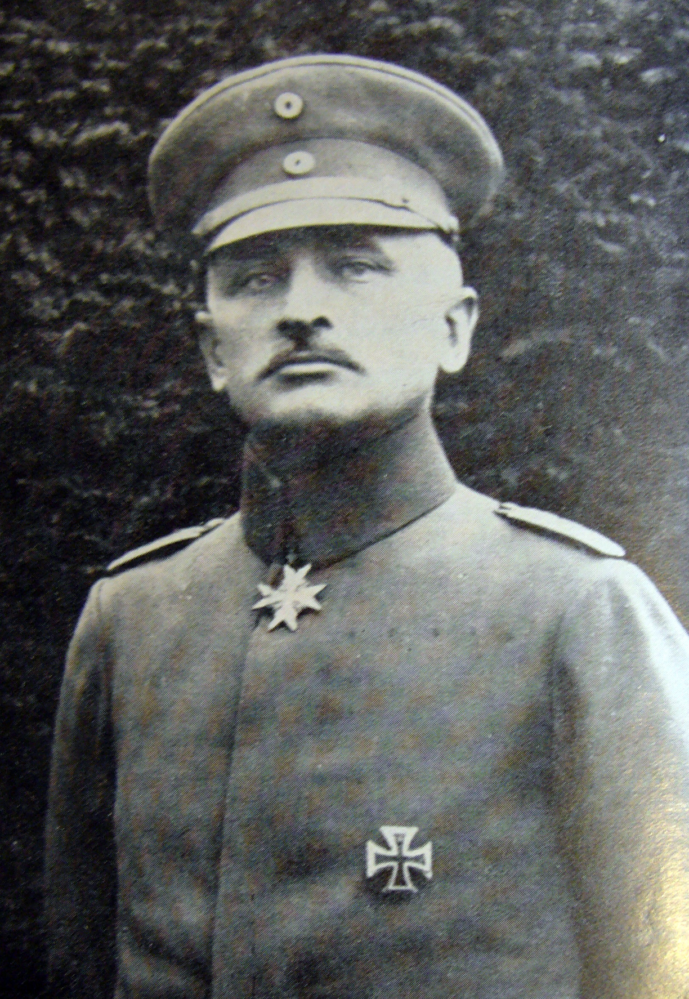

Raised in 1813 from the 2nd Bergisches Infantry Regiment, the unit took its final name in 1889 in honor of Generalleutnant Heinrich Wilhelm von Horn. Garrisoned at the Hornkaserne in Trier on the eve of the war, IR 29 recruited heavily from the Moselle valley — a historically Catholic corner of the Prussian Rhineland. It mobilized on 2 August 1914 as part of the 31st Infantry Brigade, 16th Division, VIII Army Corps.

Founding & early campaigns
Formed 5 December 1813 from the 2nd Bergisches Infantry Regiment; took part in the 1815 campaign against France, the 1849 Baden campaign, and the wars of 1866 and 1870/71 before the regiment's WWI mobilization.
Luxembourg · Belgium · Neufchâteau · the Marne · Vitry-le-François · Champagne · the Yser
Mobilization and the advance through Luxembourg and Belgium, followed by the war's opening mobile campaign in the west.
Winter & Autumn Champagne · Loretto / La Bassée · Arras · the Aisne
The shift to positional, trench-bound warfare along the Western Front.
The Somme · the Aisne · Kowel & the upper Styr/Stochod (brief Eastern Front detachment)
Committed to the Somme fighting before a temporary transfer east.
The Aisne · Third Battle of Flanders (Passchendaele)
Oberstleutnant Heinrigs, the regiment's last commander, received the Pour le Mérite on 8 November 1917.
Fourth Battle of Flanders · Artois · Ypres · La Bassée · Monchy · Bapaume · Armentières · Lens · Antwerp–Meuse position
The regiment's final campaigns, through demobilization at Leer in December 1918 and dissolution on 1 May 1919. 3,540 of its soldiers were killed during the war.